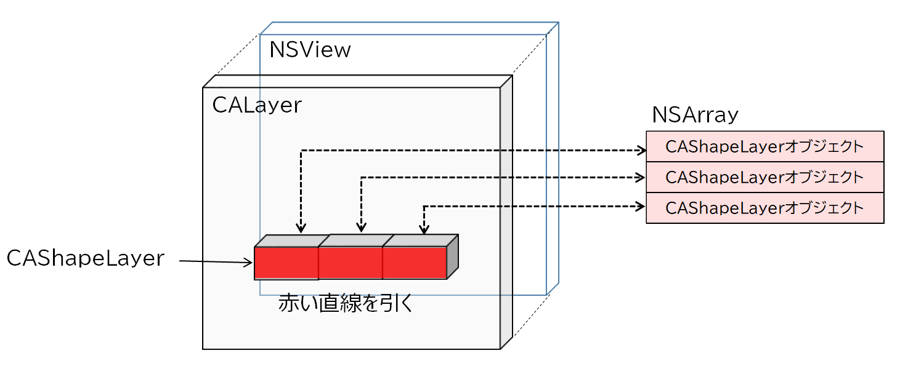

ビューに線を引く CALayerクラスの利用
Drawボタンのクリックによりビューの中心から渦巻き状に直線を追加していく。
Clearボタンのクリックにより直近に追加した直線からクリアしていく。
画像をクリックすると動画が始まる。
線の描画
線を描画するには線の形状としてCAShapeLayerオブジェクトを作成し、ビューに対応するlayerオブジェクトに addSublayerメソッドを使用して追加していく。CAShapeLayerオブジェクトはpathプロパティに NSBezierPathオブジェクトを保持し、これが形状の実体を持つ。
線を消去するにはオブジェクトに対して removeFromSuperlayerメソッドを呼ぶ。
オブジェクトの追加は、オブジェクトの参照がコピーされるだけなので、コピー元のオブジェクト本体は解放してはならない。

線の描画
線の消去
ソースコード
アプリケーション制御
AppDelegate
ビュークラス（アプリケーション本体）
UACGView